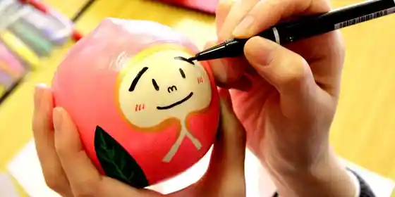

Kenjo Momo
Koori, Fukushima · 024-582-2126 · Official / source link
Orin
Koori, Fukushima · 024-582-2175 · Official / source link
Shifuku no Momo Nomu Konnyaku Zerii
Koori, Fukushima · 024-572-3216 · Official / source link
Shifuku no Momo Gumi
Koori, Fukushima · 024-572-3216 · Official / source link
Shifuku no Momo Sorube
Koori, Fukushima · 024-572-3216 · Official / source link
Fuku Momo Chan Etsuke Ke Experience
Koori, Fukushima · 024-582-3722 · Official / source link

Camp Office no Mori Park
Koori, Fukushima · 024-582-2126 · Official / source link
Sangasawakawa Hotaru Nature Park
Koori, Fukushima · 024-582-2126 · Official / source link
Hatoreiku Handa Numa
Koori, Fukushima · 024-582-4590 · Official / source link
Ubuka no Sato
Koori, Fukushima · 024-582-4500 · Official / source link
Tanenori Art Museum
Koori, Fukushima · 024-582-5507 · Official / source link
Kyu Date Gun Yakusho
Koori, Fukushima · 024-582-5507 · Official / source link
Momo no Sato Pogatto Park
Koori, Fukushima · 024-582-2126 · Official / source link
Kori Togenkyo no Momo no Hana
Koori, Fukushima · 024-582-2126 · Official / source link
Man Sei Tera no Dai Kaya
Koori, Fukushima · 024-582-2408 · Official / source link
Okage no Matsu
Koori, Fukushima · 024-582-2408 · Official / source link
Koori Nishiyama Castle Ruins
Koori, Fukushima · 024-582-2408 · Official / source link
Koori Terayama Mon
Koori, Fukushima · 024-582-2408 · Official / source link
Kannon Tera
Koori, Fukushima · 024-582-3072 · Official / source link
Date Choso Hakasho
Koori, Fukushima · 024-582-2408 · Official / source link